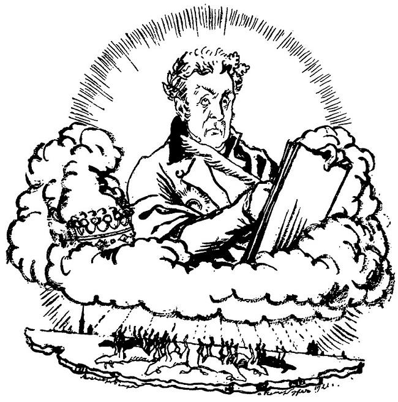

Утра лучъ Изъ-за усталыхъ, блѣдныхъ тучъ Блеснулъ надъ тихою столицей, И не нашелъ уже слѣдовъ Бѣды вчерашней; багряницей Уже прикрыто было зло. Въ порядокъ прежній все вошло. Уже по улицамъ свободнымъ, Съ своимъ безчувствіемъ холоднымъ, Ходилъ народъ. Чиновный людъ, Покинувъ свой ночной пріютъ, На службу шелъ. Торгашъ отважный, Не унывая, открывалъ Невой ограбленный подвалъ, Сбираясь свой убытокъ важный На ближнемъ выместить. Съ дворовъ Свозили лодки. И Хвостовъ, Поэтъ, любимый небесами, Ужъ пѣлъ безсмертными стихами Нещастье невскихъ береговъ.
Но бѣдный, бѣдный мой Евгеній...
Увы! его смятенный умъ
Противъ ужасныхъ потрясеній
Не устоялъ. Мятежный шумъ
Невы и вѣтровъ раздавался
Въ его ушахъ. Ужасныхъ думъ
Безмолвно полонъ, онъ скитался.
Его терзалъ какой-то сонъ.
Прошла недѣля, мѣсяцъ — онъ
Къ себѣ домой не возвращался.
Его пустынный уголокъ
Отдалъ въ наймы, какъ вышелъ срокъ,
Хозяинъ бѣдному поэту.
Евгеній за своимъ добромъ
Не приходилъ. Онъ скоро свѣту
Сталъ чуждъ. Весь день бродилъ пѣшкомъ,
А спалъ на пристани; питался
Въ окошко поданнымъ кускомъ.
Одежда ветхая на немъ
Рвалась и тлѣла. Злыя дѣти
Бросали камни вслѣдъ ему.